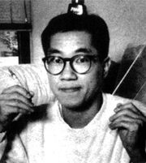

Toriyama was born on April 5, 1955, in Nagoya, Aichi, Japan. His father owned an auto repair business and enjoyed motorbike racing. Toriyama has inherited the love for cars and motorbikes from his father.
As there were no means of entertainment during his school days, all his elementary school friends tried to draw anime and manga. He, too, followed the trend and then, his entry of ‘101 Dalmatians’ won him a prize at the local art studio. Thus, he got interested in this work.
In 1974, he joined high school to study art, specializing in publicity. But in 1977 he left it to enroll in ‘cartoon drawing.’ Then he took up a job of designing posters in an advertising company in Nagoya. He worked for 3 years before quitting the job to become a manga artist.
He entered his manga in an amateur contest of ‘Jump’ magazine. Though he didn’t win it, his work was noticed and appreciated by Kazuhiko Torishima, who later worked as the editor of Toriyama’s manga.